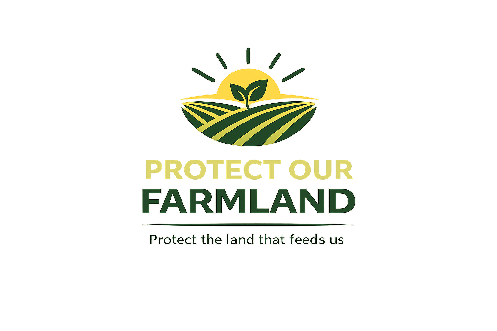

Farmland is not empty land waiting to be developed. It is the foundation of our food supply, rural economies, and community identity.
Protect the land that feeds us.
Farmland loss is a serious issue that threatens our food security, rural communities, and long term economic stability. Continued urban expansion onto agricultural land is something we cannot afford economically or culturally.
The facts below support this campaign’s message across every media component. They show that farmland loss is measurable, costly, and connected to the well being of farming communities.
Up to 18 million acres of U.S. agricultural land could be affected by urbanization by 2040 if current development trends continue.
Xie et al., 2023
Low-density residential development is projected to expand by about 21 million acres by 2040, adding pressure to agricultural land.
Xie et al., 2023
Urbanizing regions often convert highly productive cropland with 30–40% higher yield potential than replacement land.
Andrade et al., 2021
Urban growth research in California’s San Joaquin Valley compared seven development scenarios and found sprawling status quo growth created the greatest farmland and revenue losses.
Roth et al., 2012
As someone studying agriculture and communicating with different audiences about agricultural issues, I see farmland as more than open space. Farmland not only supports farmers, but also the local economies and rural communities as well. When that land disappears under roads and subdivisions, communities lose something that cannot easily be replaced.
That is why this campaign uses a direct but practical message that growth is important, but it should not come at the cost of losing the land that feeds us.
This blog post explains why farmland loss should concern everyone, including farmers, policymakers, and everyday consumers. It connects farmland conversion to food security, economic risk, rural culture, and personal experience.
This infographic visually explains this campaign’s central message: farmland loss threatens food production, economic stability, and farming culture. It also gives readers simple steps they can take to help protect farmland.
This three-episode podcast series explains What farmland loss is, the effects of that loss , and what people can do to protect farmland.
This episode introduces farmland loss and explains how urban expansion converts agricultural land.
This episode explores agricultural revenue losses, public service costs, and community impacts.
This episode focuses on smart growth, local food systems, and simple actions listeners can take.
This campaign brings every media piece together around one clear message: farmland protection starts with awareness and local action.
Protect the land that feeds us.
Social Media Mock Posts
The campaign’s social media posts use the handle @ProtectOurFarmland and the tagline Protect the land that feeds us. The posts share research backed facts through Instagram and Twitter/X visuals.